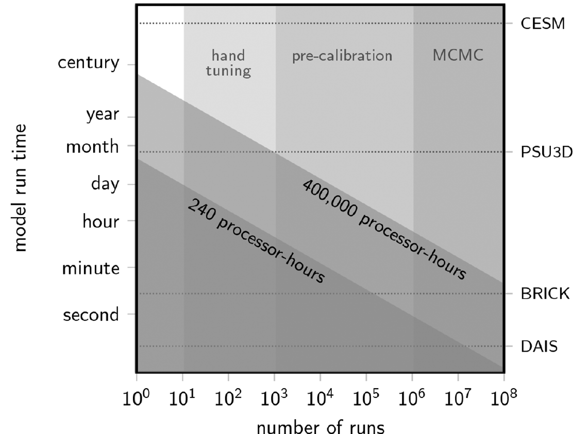
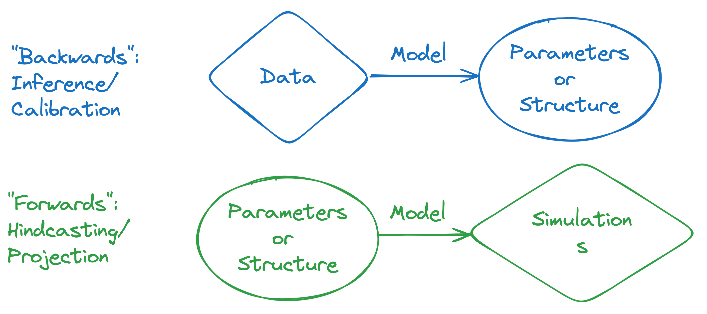

Emulation Wrap-Up and Class Review
Lecture 22
May 1, 2024
Review of Last Class
Benefits of Model Simplicity
- More thorough representation of uncertainties
- Can focus on “important” characteristics for problem at hand
- Potential increase in generalizability

Source: Helgeson et al. (2021)
Downsides of Model Simplicity
- Potential loss of salience
- May miss important dynamics (creating bias)
- Parameter/dynamical compensation can result in loss of interpretability
Simplicity Tradeoffs
Simple models can be epistemically and practically valuable.
But:
Need to carefully select which processes/parameters are included in the simplified representation, and at what resolution.
Approximating Complex Models
Challenge: How do we simplify complex models to keep key dynamics but reduce computational expense?
Approximate (or emulate) the model response surface.
- Evaluate original model at an ensemble of points (design of experiment)
- Calibrate emulator against those points.
- Use emulator for UQ with MCMC or other methods.
Design of Experiments
Important to strike a balance betwee:
- Computational expense for model evaluation
- Dense/expansive enough sample for training
Emulation Methods
Overview of Methods
Any “simple”, fast to evaluate model structure can be used for emulation:
- Gaussian processes;
- Artificial neural networks (or other ML methods);
- Polynomial chaos expansions;
- Radial basis functions;
- Reduced-form models (think SLR semi-empirical model)
How To Choose An Emulation Method?
- Dimensionality of problem
- Interpretability vs. response surface complexity
- Needed number of training evaluations
- Hyperparameter tuning
Selecting Parameters For Simplification
Simplification often involves down-selecting parameters of interest.
This could be based on:
- Scientific relevance;
- Factor importance
Factor Prioritization

Source: Reed et al. (2022)
How to Rank Factors?
Sensitivity Analysis:
- All-At-Once vs. One-at-a-Time
- Local vs. Global
Good overview with some notebooks: Reed et al. (2022)
Types of Sensitivity Analysis

Source: Reed et al. (2022)
Design of Experiments

Source: Reed et al. (2022)
Class Review
Why Does Data Analysis Matter?
- Scientific insight;
- Decision-making;
- Understanding uncertainty
The Ideal

Source: XKCD 2400
Modes of Data Analysis

What Did We Do?
- Probability Models for Data
- Bayesian and Frequentist Statistics
- Monte Carlo/Bootstrap Simulation
- Assessing Model-Data Fit and Hypothesis Testing
What Are Some Next Directions?
- More specific models/statistical methods (time series, spatial statistics, hidden Markov models, model-based clustering, etc)
- Machine learning and clustering
- Dimension reduction (principal components, singular value decomposition, etc)
Key Takeaways and Upcoming Schedule
Upcoming Schedule
Friday: HW4 due
Next Monday: Project Presentations, email slides by Saturday.